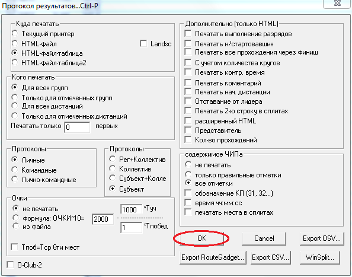

В оригинальном виде RouteGadget не умеет работать с произвольном порядком взятия КП. Добавление поддержки такой возможности производилось с минимальным изменением кода. Это обстоятельство накладывает определенные нюансы в добавлении соревнований такого типа. Первое что необходимо подготовить файл дистанций.
Здесь можно выделить 2 случая. Первый - когда у групп нет индивидуальных КП, и вполне достаточно иметь одну дистанцию для всех. Если же КП различаются или нужно ограничить количество по группам, тогда придется делать разные дистанции. В зависимости от ситуации в Ocad добавляем нужное количество дистанций. Дистанции определяютмя таким же образом как и для заданки. При это последовательность КП будет определять только порядковый номер в РГ. Те как будут соединены КП не важно, главное их количество. После этого делаем экспорт дистанций в xml.
Сплиты участников получаются с помощью программы WinOrient. К сожалению программа тоже заточена под заданку и для дистанции есть порядок ее прохождения. Поскольку этот порядок не совпадает с реальными, большинсто КП воспринимается как неправильно взятые. WinOrient в таком случае просто суммирует сплиты. И на выходе получается что спортсмен взял всего 2,3 или 4 КП. Чтобы получить правильные сплиты, нужно работать с данными чипа. Эти данные могут получены все также с помощью WinOrient, в формате html. Ниже приведны настройки html-экспорта.
Таким образом нам нужно пройти по всем участникам, получить сплиты из html, и сохранить все в csv. Стоит отметить что нужно учитывать дублирующе КП, и что в html нет отдельного сплита на финиш. Но этот сплит может быть получен через разницу итогового времени и суммы сплитов. Для автоматизации описанного процесса написано Air-приложение. Ее интрефейс крайне прост - нужно указать пути к базовой csv, экспорту в формате html и расположение итоговой csv. После чего нажать кнопку сформировать. Программа выводить информацию о статусе выполнения. В результирующей csv не требуется дополнительно заменять знак точки с запятой на запятую.
Если у вас еще не стоит Adobe AIR, то следует сначала поставить его. Идейно это напоминает java jre, которая требуется для выолнения java-программ. После этого можно непосредственно установить программу описанную выше choiceResultCSV.air
Процесс создания такого типа соревнования идентичен заданке. Все что нужно - выбрать тип соревнований на странице создания нового эвенета. В случае типа выбор соревновнаие помечается особым образом, и в дальнейшем дистанции будут отображаться без соединительных линий. Участник может рисовать свой путь выбирая произвольные КП, но он должен пройти столько КП, сколько есть сплитов. Чтобы облегчить понимание ниже кнопки сохранить выводитмя информация о количестве отметок.